ggplot2のすゝめ
本資料ではggplot2パッケージで定義されている関数は明示的にggplot2パッケージの関数であることを示すために実行コードに対しては関数名の前にggplot2::という表記を加えてあります。実際のコーディングにおいてlibrary関数やrequire関数でggplot2パッケージを呼び出している場合にはggplot2::の記述は不要です。
はじめに
Rが描いてくれるグラフは便利で分かりやすいのですが、反面、色気がないとか、パラメータの指定方法が統一的でないとか、重ね合わせをするのが面倒であるとか、関数名に統一性がないとか、色々と細かい不満があります。
標準描画関数
Rの標準パッケージ（主にgraphicsパッケージ）で定義されている描画関数を用いて散布図と箱ひげ図を描くと以下ようになります。
plot(iris$Sepal.Width, iris$Sepal.Length)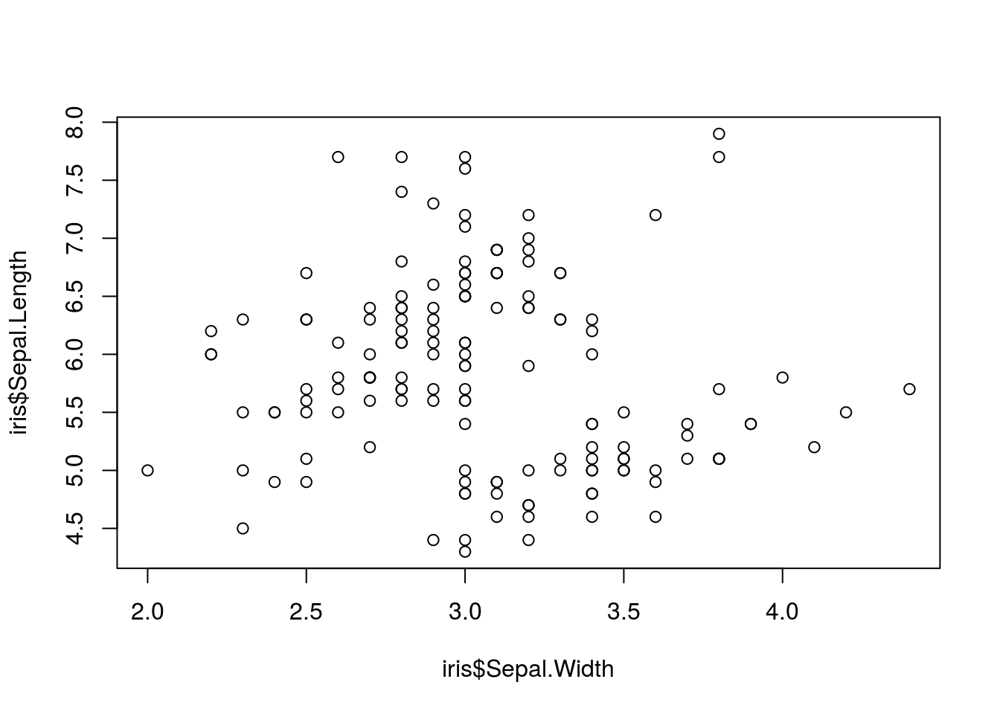
boxplot(iris$Sepal.Length ~ iris$Species)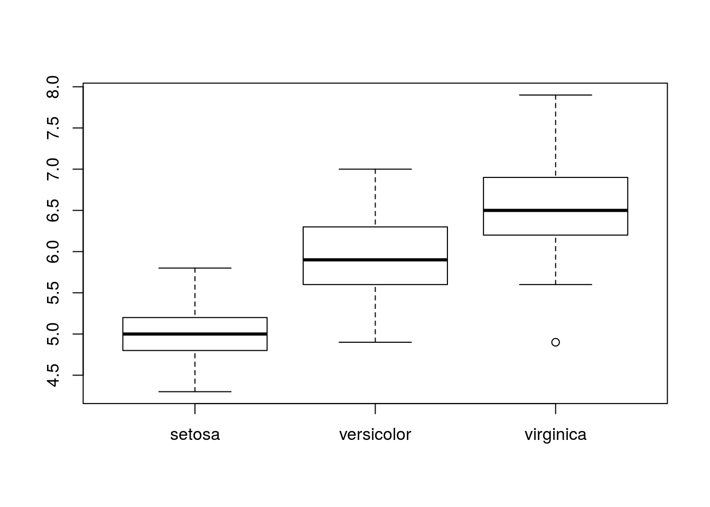
このように標準パッケージの描画関数はあまり統一的な文法になっているとは言えません。そこで、データハンドリングで処理したデータフレームを統一的な文法でグラフ化できるggplot2パッケージの出番です。
ggplot2
ggplot2パッケージはtidyverseパッケージの一部であり、dplyrパッケージやtidyrパッケージで整形した整然データ(Tidy Data)を統一した文法でそのまま扱えます。
iris %>%
ggplot2::ggplot(ggplot2::aes(x = Sepal.Width, y = Sepal.Length)) +
ggplot2::geom_point()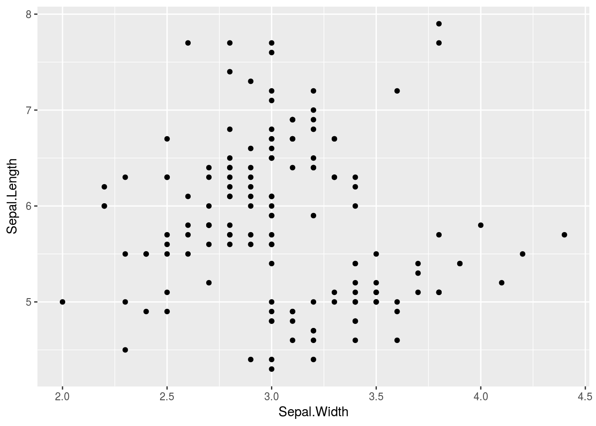
iris %>%
ggplot2::ggplot(ggplot2::aes(x = Species, y = Sepal.Length)) +
ggplot2::geom_boxplot()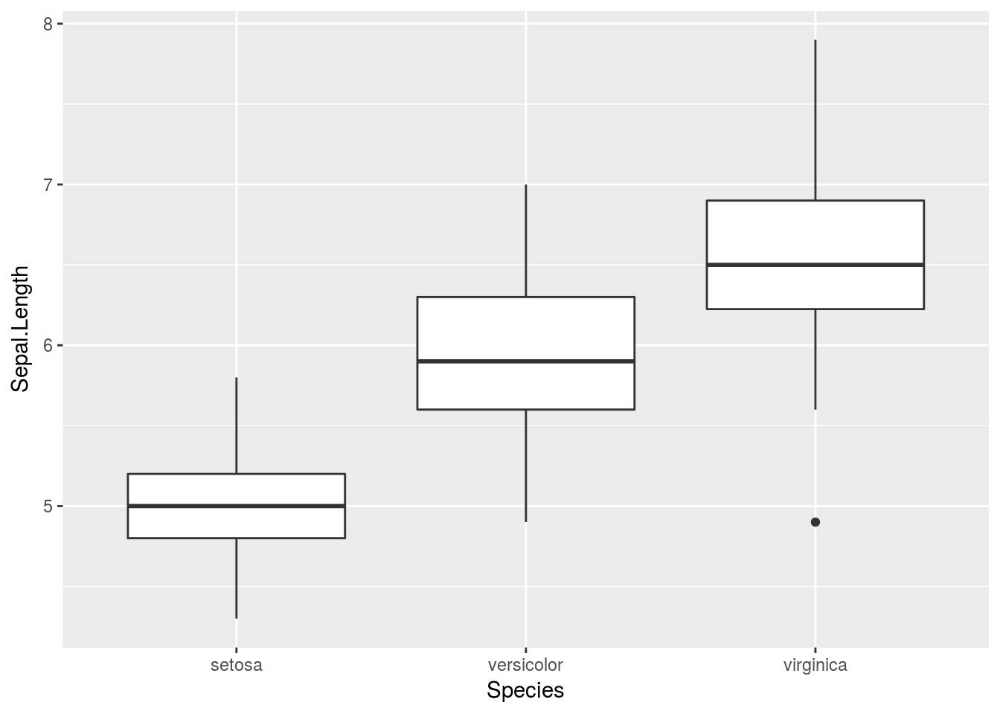
このようにggplot2パッケージでは散布図も箱ひげ図も同じ文法で描け、以下のような特徴があります。
- グラフの種類が違ってもグラフ軸の指定方法は同じ
- グラフの重ね合わせや層別での色分けも簡単
- 描画範囲はデータから自動的に判断
- テーマ機能でお好みのカラーリングに
- 地図グラフなども扱える
1 基本的な使い方
ggplot2の文法は非常にシンプルです。まず、データと座標を用意し、その上に描きたいコンポーネントを重ねていくイメージです。GIS（地理情報システム）やPhotoshopにおけるレイヤー機能と同じような考え方です。
散布図を描く場合
iris %>%
ggplot2::ggplot(ggplot2::aes(x = Sepal.Width, y = Sepal.Length)) +
ggplot2::geom_point()
- 可視化したいデータを指定し
- ｘ軸とｙ軸の変数を指定して座標軸を用意
- その座標軸に対する散布図を描く
という手順で描けます。散歩図でなくヒストグラムでも箱ひげ図でも同じ手順で描けます。このように非常にシンプルで統一された手順でグラフが描ける
ggplot2パッケージを習得するために以下のグラフを描くための手順をステップバイステップで解説していきます。Fig.目標（ゴール）のイメージ
1.1 座標軸を用意する
まず、グラフを描くためのベースとなる座標軸を用意します。今回は、ｘ軸にがく片の幅（Sepal.Width）、ｙ軸にがく片の長さ（Sepal.Length）を指定します。座標軸はggplot2::ggplot関数を用いて作成します。
# Usage
ggplot(data = NULL, mapping = aes(), ..., environment = parent.frame())座標軸の具体的な指定はmapping引数に対してggplot2::aes関数を用いて作成します。
# Usage
aes(x, y, ...)では、実際にｘ軸に萼片の幅（Sepal.Width）、ｙ軸に萼片の長さ（Sepal.Length）を指定して座標軸を描いてみましょう。
iris %>%
ggplot2::ggplot(ggplot2::aes(x = Sepal.Width, y = Sepal.Length))Fig.座標軸
1.2 散布図を描く
用意した座標軸の上にグラフを描くにはggplot2::geom_関数群を用います。ここでは散布図を描きますのでggplot2::geom_point関数を用います。
# Usage
geom_point(mapping = NULL, data = NULL, stat = "identity",
position = "identity", ..., na.rm = FALSE, show.legend = NA,
inherit.aes = TRUE)ggplot2パッケージでは関数を+記号を用いて連結しることができます。レイヤーを+で重ね合わせるというイメージだと思ってください。
iris %>%
ggplot2::ggplot(ggplot2::aes(x = Sepal.Width, y = Sepal.Length)) +
ggplot2::geom_point()Fig.用意した座標軸に散布図を上書きする
1.3 タイトルをつける
描けた散布図にタイトルをggplot2::ggtitle関数を用いてつけてみましょう。
# Usage
ggtitle(label, subtitle = NULL)サブタイトルをつけることも可能ですが、ここでは省略します。
iris %>%
ggplot2::ggplot(ggplot2::aes(x = Sepal.Width, y = Sepal.Length)) +
ggplot2::geom_point() +
ggplot2::ggtitle("みんな大好きiris")Fig.タイトルをつける
1.4 座標軸ラベルを変更する
座標軸のラベルはデフォルトではggplot2::aes関数で指定した変数名が使われます。分かりやすくするためにggplot2::xlab、ggplot2::ylab両関数を用いて座標軸ラベルを変更してみましょう。
iris %>%
ggplot2::ggplot(ggplot2::aes(x = Sepal.Width, y = Sepal.Length)) +
ggplot2::geom_point() +
ggplot2::ggtitle("みんな大好きiris") +
ggplot2::xlab("がく片の幅") + ggplot2::ylab("がく片の長さ")座標軸ラベルを変更する
1.5 層別にプロットする
このままでは色気がないので品種(Species)毎に色分けした散布図にしてみましょう。色分けはggplot2::geom_point関数内でggplot2::aes関数を用いて指定します。
# Usage
aes(colour)colourは米語のcolorと同じです。パッケージ作者のHadly Wickhamは英語(Queen’s English)至上主義なところがあり、このような引数名になっています。
iris %>%
ggplot2::ggplot(ggplot2::aes(x = Sepal.Width, y = Sepal.Length)) +
ggplot2::geom_point(aes(colour = Species)) +
ggplot2::ggtitle("みんな大好きiris") +
ggplot2::xlab("がく片の幅") + ggplot2::ylab("がく片の長さ")Fig.散布図を色分け表示する
1.6 回帰直線を描く
散布図が描けましたので回帰直線を加えてみましょう。回帰直線は別途計算する必要はなくggplot2::geom_smooth関数で描けます。
# Usage
geom_smooth(mapping = NULL, data = NULL, stat = "smooth", position = "identity",
..., method = "auto", formula = y ~ x, se = TRUE, na.rm = FALSE,
show.legend = NA, inherit.aes = TRUE)ggplot2::geom_smooth関数のデフォルト回帰種別は自動選択ですので回帰直線であることをmethodオプションで明示的に指定する必要があります。
iris %>%
ggplot2::ggplot(ggplot2::aes(x = Sepal.Width, y = Sepal.Length)) +
ggplot2::geom_point(aes(colour = Species)) +
ggplot2::ggtitle("みんな大好きiris") +
ggplot2::xlab("がく片の幅") + ggplot2::ylab("がく片の長さ") +
ggplot2::geom_smooth(method = "lm", se = FALSE)Fig.回帰直線を追加する
1.7 信頼区間を加える
回帰線の信頼区間を描くにはggplot2::smooth関数でse = TRUEオプション指定をするだけです。
# Usage
geom_smooth(mapping = NULL, data = NULL, stat = "smooth", position = "identity",
..., method = "auto", formula = y ~ x, se = TRUE, na.rm = FALSE,
show.legend = NA, inherit.aes = TRUE)デフォルトでは95%信頼区間が描画されます。信頼区間を変更したい場合はlevelオプションで指定してください。
iris %>%
ggplot2::ggplot(ggplot2::aes(x = Sepal.Width, y = Sepal.Length)) +
ggplot2::geom_point(aes(colour = Species)) +
ggplot2::ggtitle("みんな大好きiris") +
ggplot2::xlab("がく片の幅") + ggplot2::ylab("がく片の長さ") +
ggplot2::geom_smooth(method = "lm", se = TRUE, level = 0.95)Fig.回帰直線に信頼区間を加える
1.8 層別の回帰直線を描く
折角、色分けしてるのですから色毎（層別）に回帰直線を描きたいものです。その場合はcolourオプションの指定をggplot2::geom_point関数ではなくggplot2::ggplot関数内で指定して下さい。
iris %>%
ggplot2::ggplot(ggplot2::aes(x = Sepal.Width, y = Sepal.Length,
colour = Species)) +
ggplot2::geom_point() +
ggplot2::ggtitle("みんな大好きiris") +
ggplot2::xlab("がく片の幅") + ggplot2::ylab("がく片の長さ") +
ggplot2::geom_smooth(method = "lm", se = TRUE, level = 0.95)Fig.品種で層別に回帰直線を描く
このようにggplot2::geom_関数に対して指定するか、座標軸を指定するggplot2::ggplotに対して指定するかで、オプションの有効範囲が異なります。ggplot2::aes関数を用いる時は指定場所に留意して下さい。
1.9 背景等を変える
グラフ全体の色合い等を変える場合はggplot2::theme_関数群を用います。デフォルトテーマを含め以下の8種類のテーマ関数が用意されています。
# Usage
theme_gray(base_size = 11, base_family = "") # デフォルトテーマ
theme_bw(base_size = 11, base_family = "")
theme_linedraw(base_size = 11, base_family = "")
theme_light(base_size = 11, base_family = "")
theme_dark(base_size = 11, base_family = "")
theme_minimal(base_size = 11, base_family = "")
theme_classic(base_size = 11, base_family = "")
theme_void(base_size = 11, base_family = "")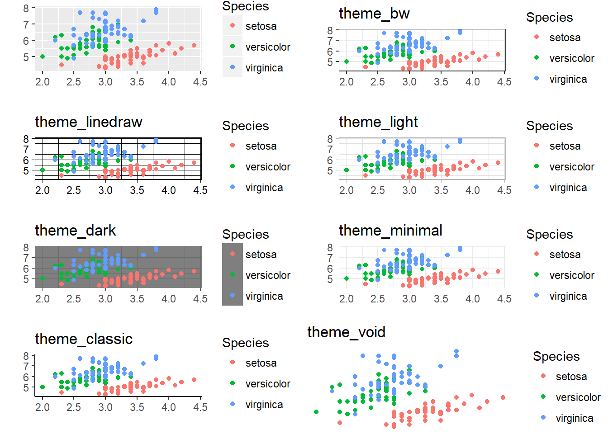
ggplot2::theme_classicを用いてグラフテーマをクラッシックに設定してみます。
iris %>%
ggplot2::ggplot(ggplot2::aes(x = Sepal.Width, y = Sepal.Length,
colour = Species)) +
ggplot2::geom_point() +
ggplot2::ggtitle("みんな大好きiris") +
ggplot2::xlab("がく片の幅") + ggplot2::ylab("がく片の長さ") +
ggplot2::geom_smooth(method = "lm", se = TRUE, level = 0.95) +
ggplot2::theme_classic()Fig.クラッシックテーマを設定して完了
これで、目標としていたグラフを描くことができました。
2 応用的な使い方
ggplot2パッケージでは更に様々なアレンジが可能です。
2.1 サイズを変える
例えば散布図の点の大きさを変えるにはsizeオプションを用います。
iris %>%
ggplot2::ggplot(ggplot2::aes(x = Sepal.Width, y = Sepal.Length,
colour = Species)) +
ggplot2::geom_point(size = 5)画一的に点のサイズを指定する
2.2 変数を用いてサイズを変える
更に花弁の長さ（Petal.Length）に応じた点の大きさにしたい場合はggplot2::aes関数の中でsizeオプションを用います。
iris %>%
ggplot2::ggplot(ggplot2::aes(x = Sepal.Width, y = Sepal.Length,
colour = Species)) +
ggplot2::geom_point(ggplot2::aes(size = Petal.Length))変数の値に応じて点のサイズを変える
2.3 点を別の形に変える
色分けだけでは見難い場合にはshapeオプションを用いて丸点とは異なるシンボルマークに変更することができます。
iris %>%
ggplot2::ggplot(ggplot2::aes(x = Sepal.Width, y = Sepal.Length,
colour = Species)) +
ggplot2::geom_point(ggplot2::aes(shape = Species), size = 3)品種に応じて点の形を変える
2.4 ヒストグラムを描く
がく片の長さ（Sepal.Length）のヒストグラムをggplot2::geom_histgram関数を用いて描いてみましょう。
# Usage
geom_histogram(mapping = NULL, data = NULL, stat = "bin", position = "stack",
..., binwidth = NULL, bins = NULL, na.rm = FALSE,
show.legend = NA, inherit.aes = TRUE)ヒストグラムの場合、縦軸(y軸)は度数になりますので、ggplot2::aes関数でyオプションを指定する必要はありません。binsオプションは横軸(x軸)の分割数ですが、階級幅の指定はヘルプを参照して適切なものを指定してください。
iris %>%
ggplot2::ggplot(ggplot2::aes(x = Sepal.Length)) +
ggplot2::geom_histogram(bins = 20)Fig.ヒストグラム
2.5 ヒストグラムを色分けする
ggplot2::geom_histgram関数に対するcolourオプション指定は枠線にしか適用されません。
iris %>%
ggplot2::ggplot(aes(x = Sepal.Length, colour = Species)) +
ggplot2::geom_histogram(bins = 20)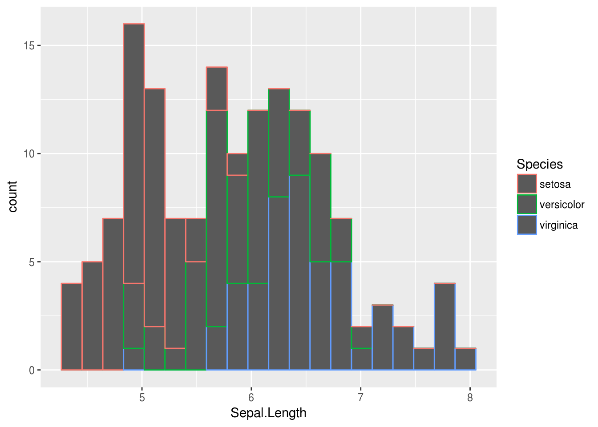
塗りつぶしはfillオプションを使用する必要があります。
iris %>%
ggplot2::ggplot(ggplot2::aes(x = Sepal.Length, fill = Species)) +
ggplot2::geom_histogram(bins = 20)塗りつぶす場合はfillオプションで
2.6 色の透過度を変える
塗りつぶし色は、結構、どぎつい傾向がありますのでの透過度(アルファチャネル)を用いて変更した方がきれいなことがあります。alphaオプションを指定してください。
iris %>%
ggplot2::ggplot(ggplot2::aes(x = Sepal.Length, fill = Species)) +
ggplot2::geom_histogram(bins = 20, alpha = 0.5)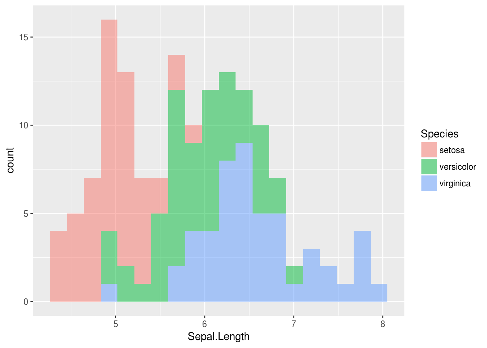
2.7 ヒストグラムを重ねて描く
ggplot2::geom_histgram関数がデフォルトで描く層別ヒストグラムは積上げグラフになっています。層別で独立したヒストグラムを描く場合にはpositionオプションを指定してください。
iris %>%
ggplot2::ggplot(ggplot2::aes(x = Sepal.Length, fill = Species)) +
ggplot2::geom_histogram(bins = 20, alpha = 0.5, position = "identity")Fig.品種で層別した重ね合わせヒストグラム
上図では今ひとつ分かりにくいかも知れませんが、下図の三つのグラフが重ね合わされて描かれており重なっている部分の色が濃くなっているのが分かるかと思います。
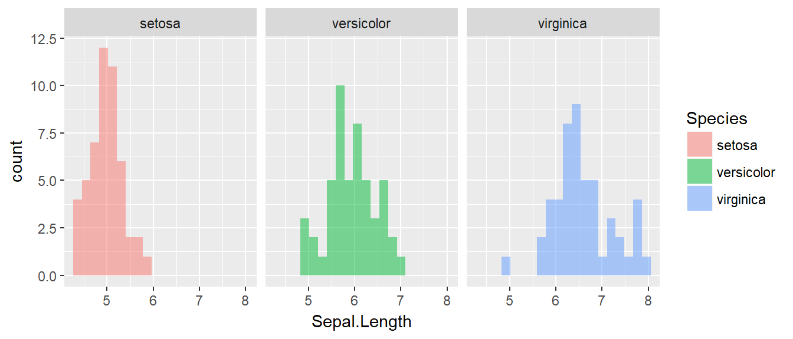
2.8 密度関数を上書きする
ヒストグラムを描く場合、密度関数も同時に描きたい場合があります。密度関数はggplot2::geom_density関数で描けます。
# Usage
geom_density(mapping = NULL, data = NULL, stat = "density",
position = "identity", ..., na.rm = FALSE, show.legend = NA,
inherit.aes = TRUE)ただし、ヒストグラムに重ね合わせる場合は注意が必要です。yオプションとしてy = ..density..を必ず指定してください。これはggplot2::stat_関数群で計算された値をｙ軸に重ね合わせるために必要な指定です。詳細は省きますので、詳しく知りたい場合は「generated variables」で検索してみてください。なおggplot2::geom_density関数におけるsizeオプションは線の太さを指定するのに用います。
iris %>%
ggplot2::ggplot(ggplot2::aes(x = Sepal.Length, y = ..density..,
fill = Species)) +
ggplot2::geom_histogram(bins = 20, alpha = 0.5, position = "identity") +
ggplot2::geom_density(alpha = 0.25, size = 0.1)密度関数を重ねると縦軸は密度になる点に注意
2.9 箱ひげ図を描く
箱ひげ図を描くにはggplot2::geom_boxplot関数を用います。ggplot2::geom_boxplotを層別で使わない場合はｘ軸に適当な値を指定してください。
geom_boxplot(mapping = NULL, data = NULL, stat = "boxplot",
position = "dodge", ..., outlier.colour = NULL,
outlier.color = NULL, outlier.fill = NULL, outlier.shape = 19,
outlier.size = 1.5, outlier.stroke = 0.5, outlier.alpha = NULL,
notch = FALSE, notchwidth = 0.5, varwidth = FALSE, na.rm = FALSE,
show.legend = NA, inherit.aes = TRUE)この場合はｘ軸にNAを指定しています。必要に応じてggplot2::xlab関数などを用いてｘ軸のラベル表示を変更してください。
iris %>%
ggplot2::ggplot(ggplot2::aes(x = NA, y = Sepal.Length)) +
ggplot2::geom_boxplot()箱ひげ図
2.10 箱ひげ図を層別で描く
ggplot2::geom_boxplot関数はで層別の箱ひげ図を描く場合はxオプションに層別変数を指定してください。
iris %>%
ggplot2::ggplot(ggplot2::aes(x = Species, y = Sepal.Length)) +
ggplot2::geom_boxplot()品種毎の層別箱ひげ図
2.11 箱ひげ図を色分けする
箱ひげ図を色分けするには二つの方法があります。描画線で色分けする場合は散布図の場合と同じくcolourオプションで指定します。
iris %>%
ggplot2::ggplot(ggplot2::aes(x = Species, y = Sepal.Length)) +
ggplot2::geom_boxplot(ggplot2::aes(colour = Species))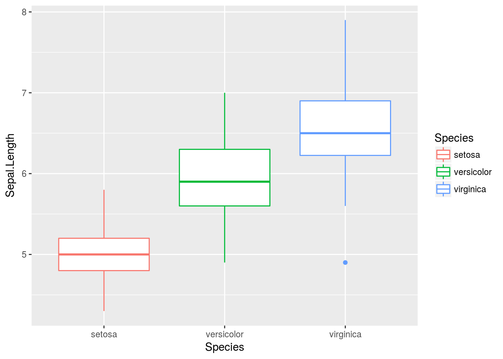
塗りつぶしで色分けする場合はヒストグラムの場合と同じくfillオプションで指定します。
iris %>%
ggplot2::ggplot(ggplot2::aes(x = Species, y = Sepal.Length)) +
ggplot2::geom_boxplot(ggplot2::aes(fill = Species), alpha = 0.5)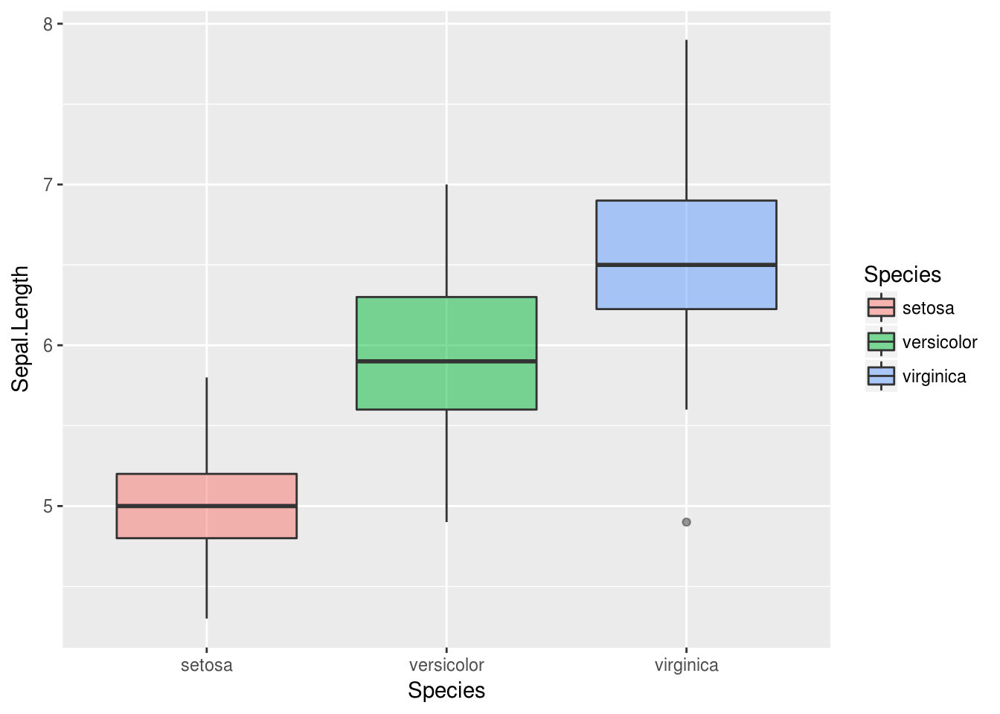
もちろんcolourとfillを同時に指定することも可能です。
iris %>%
ggplot2::ggplot(ggplot2::aes(x = Species, y = Sepal.Length)) +
ggplot2::geom_boxplot(ggplot2::aes(colour = Species, fill = Species),
alpha = 0.5)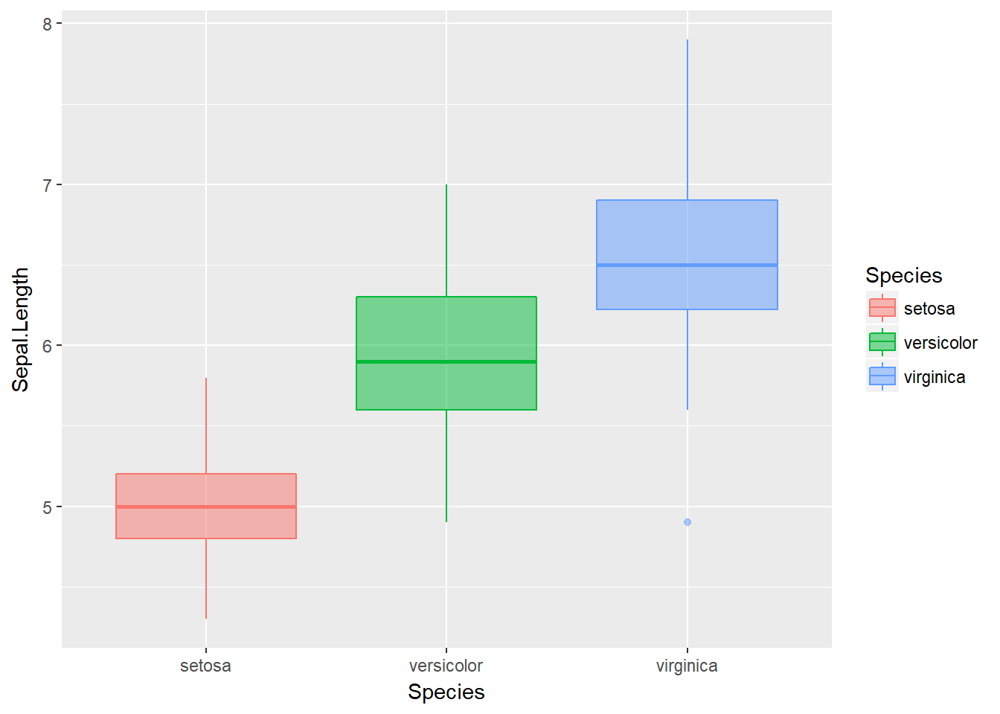
2.12 箱ひげ図にデータを重ねる
箱ひげ図だけではデータの分布傾向が分かりませんのでggplot2::geom_jitter関数を用いデータを重ねて描画すると分かりやすくなる場合があります。
# Usage
geom_jitter(mapping = NULL, data = NULL, stat = "identity",
position = "jitter", ..., width = NULL, height = NULL,
na.rm = FALSE, show.legend = NA, inherit.aes = TRUE)当然、層別による色分けも可能です。
iris %>%
ggplot2::ggplot(ggplot2::aes(x = Species, y = Sepal.Length)) +
ggplot2::geom_boxplot(ggplot2::aes(colour = Species)) +
ggplot2::geom_jitter(ggplot2::aes(colour = Species))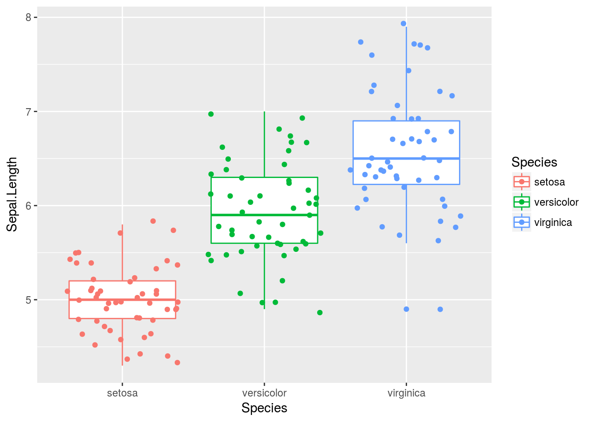
2.13 バイオリンプロット
ggplot2::geom_violinによるバイオリンプロットを使うとデータの分布を更に視覚的に把握しやすくなる場合があります。
# Usage
geom_violin(mapping = NULL, data = NULL, stat = "ydensity",
position = "dodge", ..., draw_quantiles = NULL, trim = TRUE,
scale = "area", na.rm = FALSE, show.legend = NA, inherit.aes = TRUE)バイオリンプロットも箱ひげ図同様に描画線と塗りつぶし色を指定することが可能です。
iris %>%
ggplot2::ggplot(ggplot2::aes(x = Species, y = Sepal.Length)) +
ggplot2::geom_violin(ggplot2::aes(colour = Species, fill = Species),
alpha = 0.2)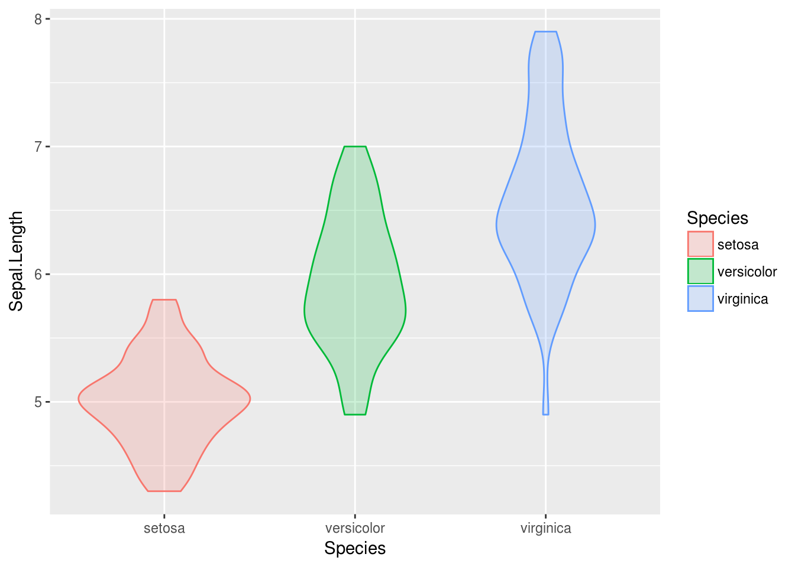
2.14 軸の比率を変更する
座標軸の範囲はデータに応じて自動的に決まりますが、ｘ軸とｙ軸の比率を変更することで見やすい、理解しやすいグラフになることがあります。このような場合にはggplot2::coord_fixed関数を用います。
# Usage
coord_fixed(ratio = 1, xlim = NULL, ylim = NULL, expand = TRUE)ggplot2::coord_equal関数というのもありますが、これはggplot2::coord_fixed関数のエイリアス関数です。では、座標軸の比率を１（デフォルト値）に設定してみましょう。
iris %>%
ggplot2::ggplot(ggplot2::aes(x = Sepal.Width, y = Sepal.Length,
colour = Species)) +
ggplot2::geom_point() +
ggplot2::ggtitle("みんな大好きiris") +
ggplot2::xlab("がく片の幅") + ggplot2::ylab("がく片の長さ") +
ggplot2::geom_smooth(method = "lm", se = TRUE) +
ggplot2::coord_fixed()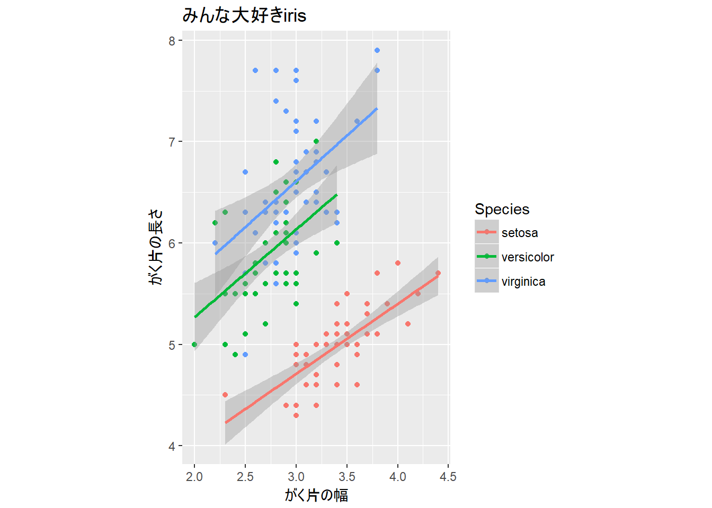
2.15 対数軸を用いる
描画対象データのレンジが広い場合は対数軸で表示すると便利な時があります。ggplot2パッケージではデータを対数変換せずとも座標軸だけを対数表示してくれます。
対数軸グラフを描く場合はggplot2::cord_trans関数またはggplot2::scale_x_log10、ggplot2::scale_y_log10両関数がありますが対数軸以外も描画可能なggplot2::cord_trans関数を使うのがおすゝめです。
# Usage
coord_trans(x = "identity", y = "identity", limx = NULL, limy = NULL,
xtrans, ytrans)常用対数logを指定して対数軸グラフを描いてみます。データの範囲が狭いのでちょっと見難いですが対数軸で表示すると補助線の間隔が異なってることが分かります。
iris %>%
ggplot2::ggplot(ggplot2::aes(x = Sepal.Width, y = Sepal.Length,
colour = Species)) +
ggplot2::geom_point() +
ggplot2::ggtitle("みんな大好きiris") +
ggplot2::xlab("がく片の幅") + ggplot2::ylab("がく片の長さ") +
ggplot2::geom_smooth(method = "lm", se = TRUE) +
ggplot2::coord_trans(x = "log", y = "log")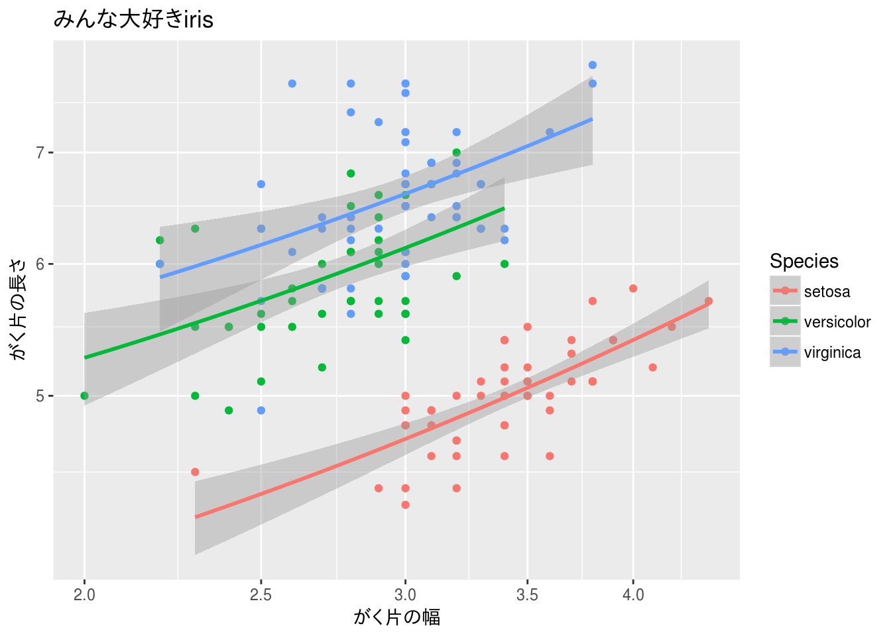
2.16 軸を入れ替る
ggplot2::coord_関数群を用いるとデータを変更することなく軸の操作が可能です。横軸と縦軸を入れ替えるにはggplot2::coord_flip関数を用います。
# Usage
coord_flip(xlim = NULL, ylim = NULL, expand = TRUE)iris %>%
ggplot2::ggplot(ggplot2::aes(x = Species, y = Sepal.Length,
colour = Species)) +
ggplot2::geom_boxplot() +
ggplot2::coord_flip()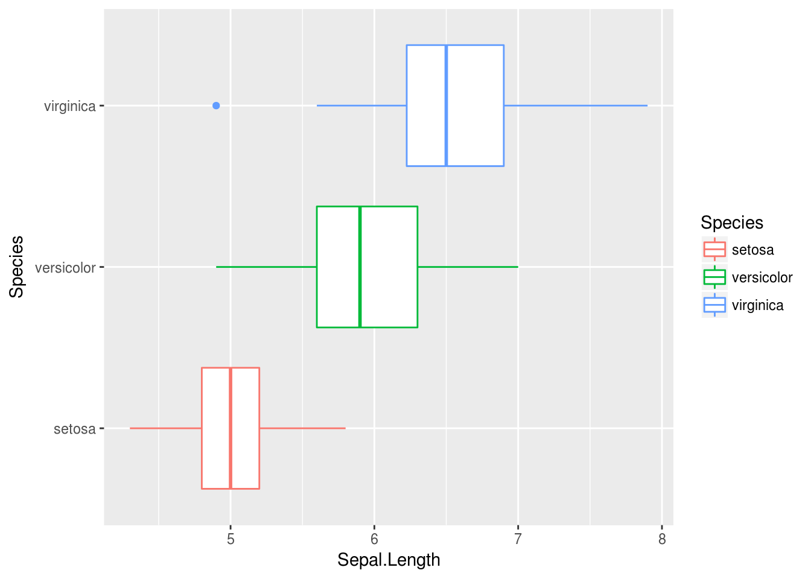
2.17 軸の反転
軸を反転させるにはggplot2::scale_x_reverse、ggplot2::scale_y_reverse関数を用います。
# Usage
scale_x_continuous(name = waiver(), breaks = waiver(), minor_breaks = waiver(),
labels = waiver(), limits = NULL, expand = waiver(),
oob = censor, na.value = NA_real_, trans = "identity",
position = "bottom", sec.axis = waiver())
scale_y_continuous(name = waiver(), breaks = waiver(), minor_breaks = waiver(),
labels = waiver(), limits = NULL, expand = waiver(),
oob = censor, na.value = NA_real_, trans = "identity",
position = "left", sec.axis = waiver())iris %>%
ggplot2::ggplot(ggplot2::aes(x = Sepal.Width, y = Sepal.Length,
colour = Species)) +
ggplot2::geom_point() +
ggplot2::scale_x_reverse()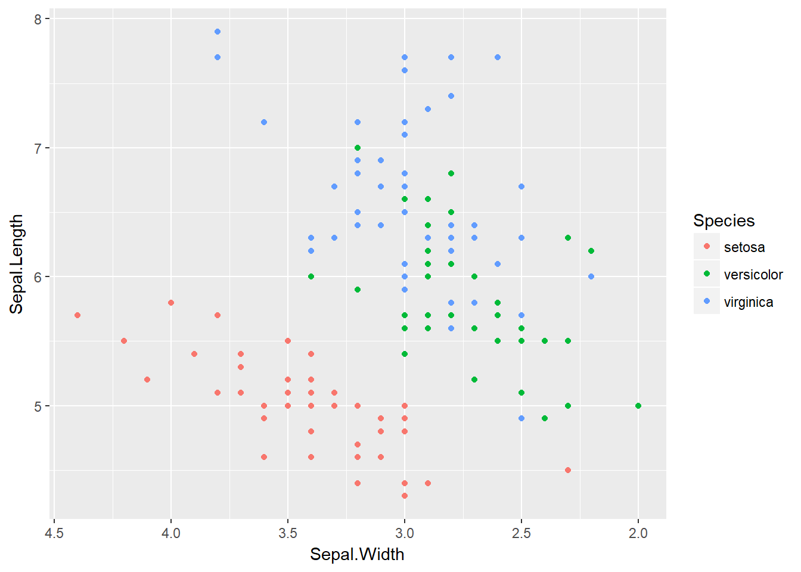
2.18 テキストラベルをつける
個々のデータにテキストラベルを付与することも可能ですが、データ数が多かったりデータの値が近接していたりすると逆に見難くなってしまうというデメリットもあります。テキストやラベルを表示するにはggplot2::geom_text関数またはggplot2::geom_label関数を用います。
# Usage
geom_label(mapping = NULL, data = NULL, stat = "identity",
position = "identity", ..., parse = FALSE, nudge_x = 0, nudge_y = 0,
label.padding = unit(0.25, "lines"), label.r = unit(0.15, "lines"),
label.size = 0.25, na.rm = FALSE, show.legend = NA,
inherit.aes = TRUE)
geom_text(mapping = NULL, data = NULL, stat = "identity",
position = "identity", ..., parse = FALSE, nudge_x = 0, nudge_y = 0,
check_overlap = FALSE, na.rm = FALSE, show.legend = NA,
inherit.aes = TRUE)mtcars %>%
ggplot2::ggplot(ggplot2::aes(x = wt, y = mpg)) +
ggplot2::geom_point() +
ggplot2::geom_smooth(method = "lm") +
ggplot2::geom_text(ggplot2::aes(label = row.names(.), colour = cyl),
hjust = "inward", vjust = "inward")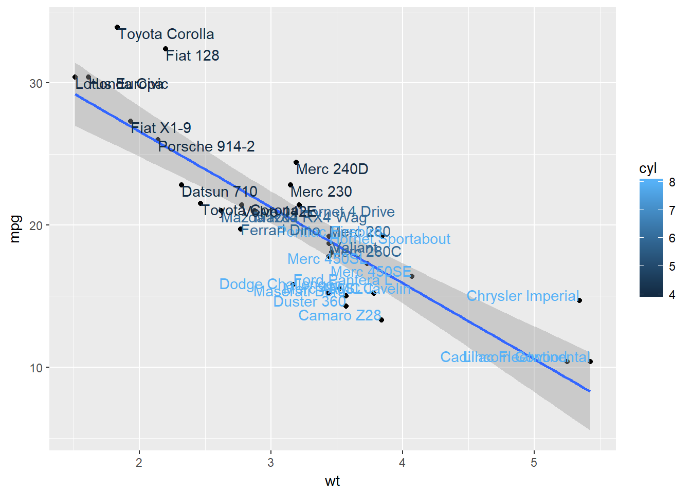
2.19 統計情報で描く
平均値とその標準誤差を計算し、平均値を棒グラフで描き、標準誤差をエラーバーで表示するということもggplot2::stat_summary関数を利用することで実現可能です。
# Usage
stat_summary(mapping = NULL, data = NULL, geom = "pointrange",
position = "identity", ..., fun.data = NULL, fun.y = NULL,
fun.ymax = NULL, fun.ymin = NULL, fun.args = list(), na.rm = FALSE,
show.legend = NA, inherit.aes = TRUE)iris %>%
ggplot2::ggplot(ggplot2::aes(x = Species, y = Petal.Length,
fill = Species)) +
ggplot2::stat_summary(fun.y = mean, geom = "bar", alpha = 0.5) +
ggplot2::stat_summary(fun.data = mean_cl_normal, geom = "errorbar",
width = 0.5)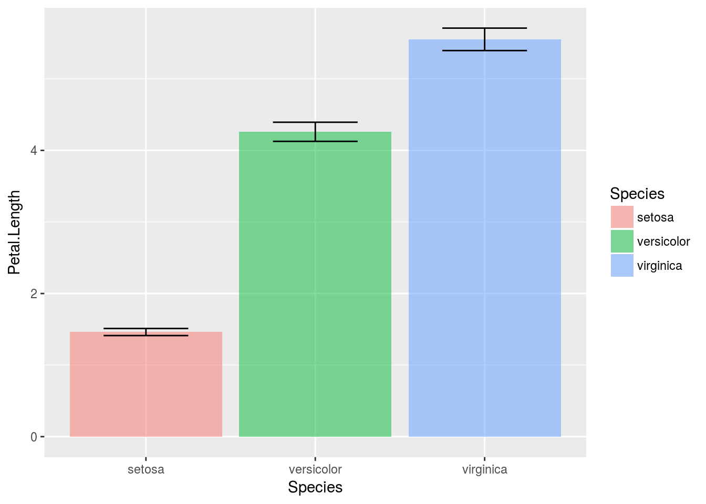
2.20 層別に描く
見やすくするために種別（Species）のデータを用いて層別のグラフにしてみましょう。層別に描くにはggplot2::facet_warpを用います。
# Usage
facet_wrap(facets, nrow = NULL, ncol = NULL, scales = "fixed", shrink = TRUE,
labeller = "label_value", as.table = TRUE, switch = NULL,
drop = TRUE, dir = "h", strip.position = "top")引数facetsは下記のようにformula形式で指定することに注意して下さい。
iris %>%
ggplot2::ggplot(ggplot2::aes(x = Sepal.Width, y = Sepal.Length,
colour = Species)) +
ggplot2::geom_point() +
ggplot2::ggtitle("みんな大好きiris") +
ggplot2::xlab("がく片の幅") + ggplot2::ylab("がく片の長さ") +
ggplot2::geom_smooth(method = "lm", se = TRUE) +
ggplot2::facet_wrap(~ Species)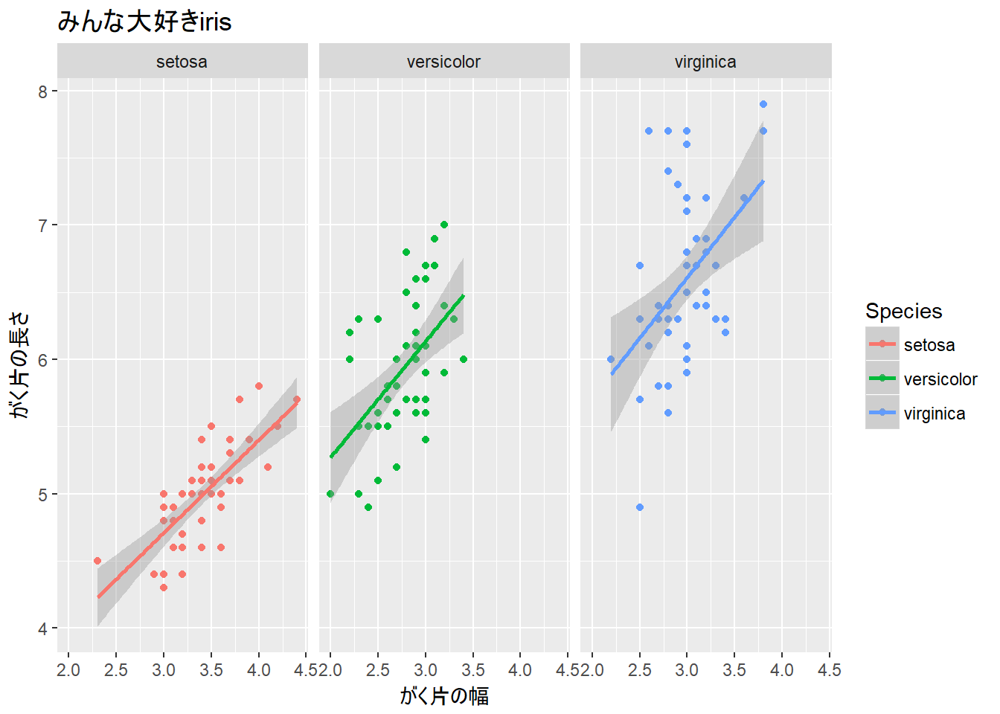
2.21 二変数で層別に描く
二変数でマトリクス状に層別にしたい場合はggplot2::facet_grid関数を用います。mtcarsデータセットを用いて車重（wt）と燃費（mpg）の関係をシリンダ数（cyl）とギア数（gear）で層別表示してみます。
# Usage
facet_grid(facets, margins = FALSE, scales = "fixed", space = "fixed",
shrink = TRUE, labeller = "label_value", as.table = TRUE,
switch = NULL, drop = TRUE)mtcars %>%
ggplot2::ggplot(ggplot2::aes(x = wt, y = mpg, colour = cyl)) +
ggplot2::geom_point() +
ggplot2::geom_smooth(method = "lm", se = TRUE) +
ggplot2::facet_grid(gear ~ cyl)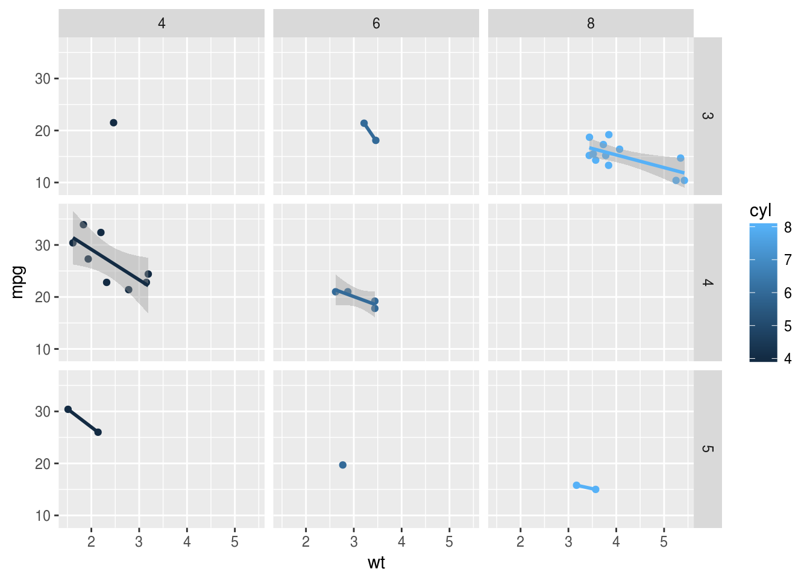
3 まとめ
このようにggplot2パッケージでは統一的な文法によりどのようなグラフも同じように描けることが分かります。加えて、色指定やグラフ装飾等も標準のグラフに比べるとてリッチです。まさに“ggplot2: Elegant Graphics for Data Analysis”。積極的に使ってみて下さい。
紹介した以外にもggplot2パッケージは時系列の折れ線グラフや棒グラフなど、様々なグラフを描くことが可能です。どのようなグラフを描けるかはヘルプはインターネットで調べてみてください。
 CC BY-NC-SA 4.0, Sampo Suzuki [2018-03-05 22:50(JST)]
CC BY-NC-SA 4.0, Sampo Suzuki [2018-03-05 22:50(JST)]